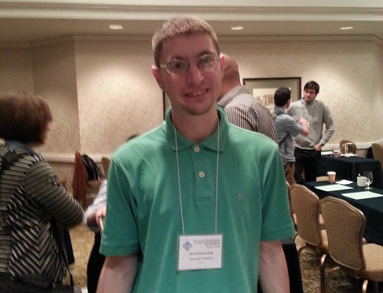
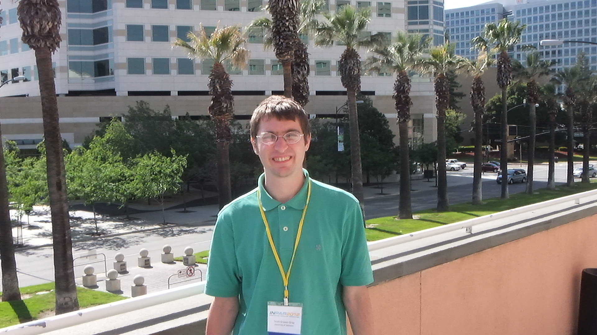
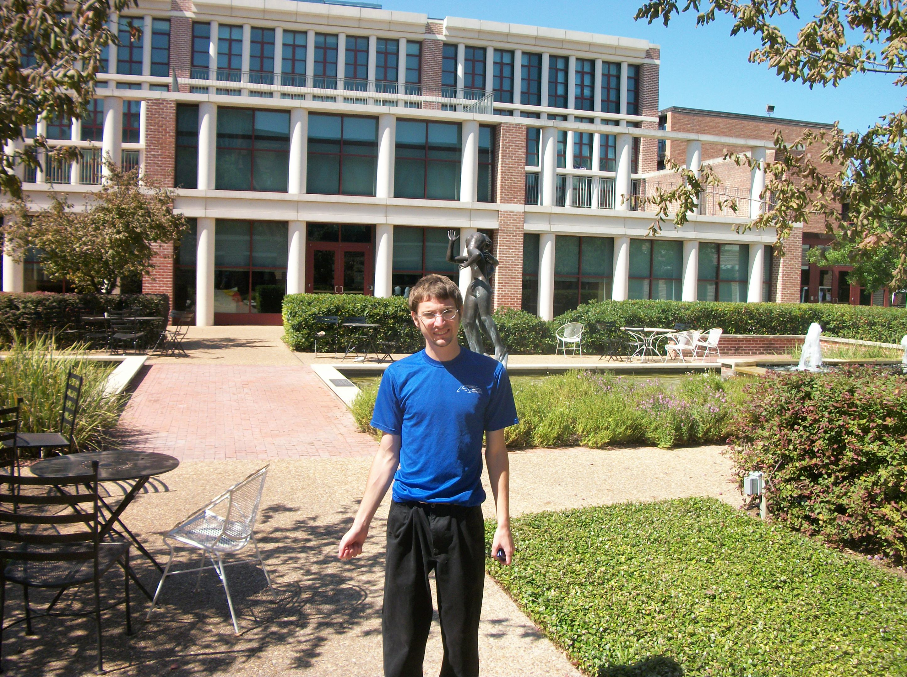
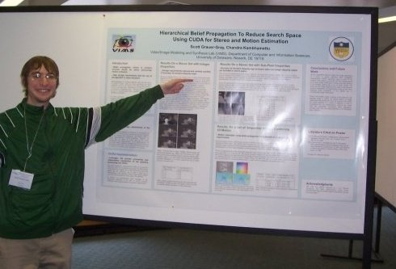
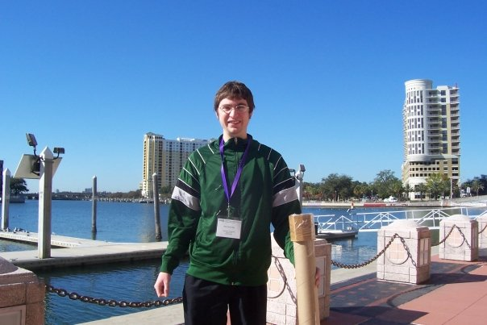

| Udel CIS Home | Udel Home | ||||
| Scott Grauer-Gray | ||||
|
|
||||
| Home Research Publications Teaching/TAing Pictures Other work Food Delivery Photo Map |
 At the Sixth Workshop on General Purpose Processing Using GPUs (GPGPU 6) at the Four Seasons Hotel in Houston, Texas in March 2013  At the Innovative Parallel Computing (INPAR 2012) at the San Jose Convention Center in San Jose in May 2012  At the 23rd International Workshop on Languages and Compilers for Parallel Computing (LCPC2010) at Rice University in Houston in October 2010  In front of my poster at the IEEE Workshop on Applications of Computer Vision ( WACV) in December 2009  At the International Conference of Pattern Recognition (ICPR) in December 2008 |